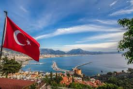

|
Place of wonder and mystery
2024-12-12 by John Doe
Egypt is a place of wonder and mystery. Seeing the Pyramids of Giza and the Sphinx in person was a surreal experience that I’ll never forget. The museums, especially the Egyptian Museum in Cairo, are filled with incredible artifacts and history. The Nile cruise was also a highlight, offering beautiful views of the countryside and ancient temples. The warm climate and vibrant culture made my visit even more memorable. |
|  |
Unforgettable experience
2024-8-21 by Hellye Anderson
My visit to Turkey was an unforgettable experience. The rich history, especially in Istanbul, with landmarks like the Hagia Sophia and the Blue Mosque, was a highlight. The food, from kebabs to baklava, was absolutely delicious, and the warm hospitality of the locals made me feel at home. The beaches on the Mediterranean coast are breathtaking, and the ancient ruins of Ephesus were awe-inspiring. I loved every moment spent exploring the cultural and natural beauty of this fascinating country. |
 |
A dream come true
2023-11-9 by Jim Kerry
Greece offers a perfect blend of history, culture, and natural beauty. Athens, with its ancient ruins like the Acropolis, was a dream come true for history lovers. The Greek islands, such as Santorini and Mykonos, are postcard-perfect, with stunning views, crystal-clear waters, and charming villages. The food—fresh seafood, olives, and feta—was beyond delicious. Every day in Greece felt like a new adventure, and I left with a deep appreciation for its rich heritage. |
My visit to China was an extraordinary journey through history and modernity. The Great Wall was a breathtaking sight, stretching over the mountains and offering a glimpse into China’s ancient past. Beijing’s Forbidden City....
Ukraine offered a fascinating blend of history, nature, and vibrant culture. Kyiv, with its golden-domed churches and the historic Kyiv Pechersk Lavra, was a highlight of my trip. Lviv’s charming old town, with its...
The United States is a vast country with diverse experiences to offer. New York City’s towering skyscrapers and energetic atmosphere were unforgettable, and Washington, D.C., held a wealth of historical sites and museums. The natural wonders, from....